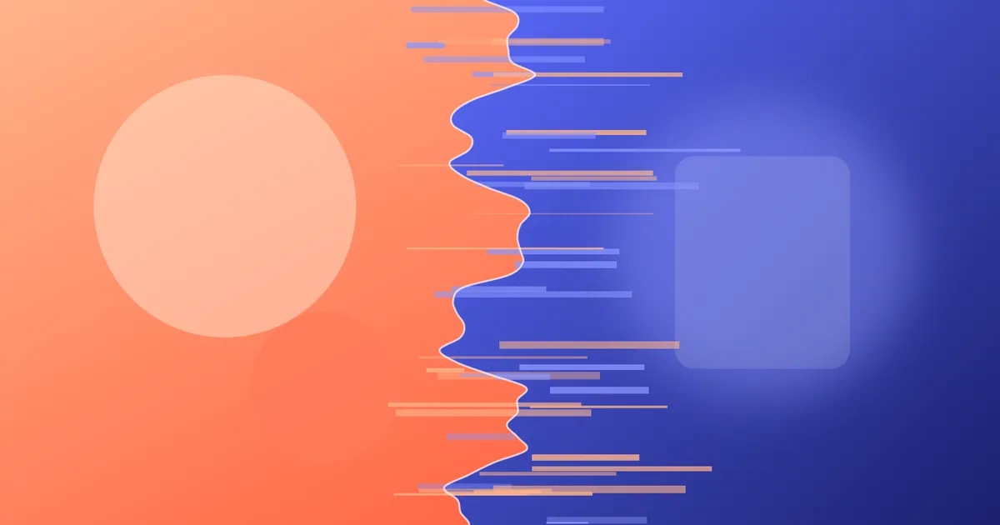

Building Buttery WebGL Page Transitions with Three.js
A step-by-step guide to shader-based image transitions in Three.js — texture loading, a displacement shader, GSAP timing and graceful fallbacks.
Last updated

The project viewer on my portfolio homepage switches between case studies with a noisy, liquid dissolve. It looks expensive, but the whole effect is one plane, two textures and about forty lines of GLSL. This article walks through the exact technique, including the parts most tutorials skip: timing, disposal and what to do when WebGL is not an option.
Why WebGL for transitions?
CSS can crossfade two images, and clip-path can wipe between them. What CSS cannot do is treat an image as data — sampling pixels from one image based on the brightness of another. That is what makes a displacement transition feel physical: pixels flow along a noise field instead of fading in place.
WebGL also keeps the main thread free. Once the textures are uploaded, the GPU does all the work, so the transition stays smooth even while React is re-rendering the case-study text next to it.
The setup: one plane, two textures
We only need an orthographic camera and a plane that fills the canvas. Everything interesting happens in the material.
import * as THREE from 'three';
const renderer = new THREE.WebGLRenderer({ canvas, antialias: false, alpha: true });
renderer.setPixelRatio(Math.min(window.devicePixelRatio, 2));
const scene = new THREE.Scene();
const camera = new THREE.OrthographicCamera(-1, 1, 1, -1, 0, 1);
const material = new THREE.ShaderMaterial({
uniforms: {
uFrom: { value: null },
uTo: { value: null },
uProgress: { value: 0 },
uCover: { value: new THREE.Vector4(1, 1, 0, 0) },
},
vertexShader,
fragmentShader,
});
scene.add(new THREE.Mesh(new THREE.PlaneGeometry(2, 2), material));The uCover uniform handles object-fit: cover maths so images of any aspect ratio fill the canvas without stretching.
Writing the displacement shader
The fragment shader mixes the two textures, but first it pushes each texture’s UVs in opposite directions using a cheap value-noise function. As uProgress goes from 0 to 1, the outgoing image is pulled away while the incoming one settles into place.
uniform sampler2D uFrom;
uniform sampler2D uTo;
uniform float uProgress;
varying vec2 vUv;
float hash(vec2 p) { return fract(sin(dot(p, vec2(127.1, 311.7))) * 43758.5453); }
float noise(vec2 p) {
vec2 i = floor(p), f = fract(p);
vec2 u = f * f * (3.0 - 2.0 * f);
return mix(mix(hash(i), hash(i + vec2(1, 0)), u.x),
mix(hash(i + vec2(0, 1)), hash(i + vec2(1, 1)), u.x), u.y);
}
void main() {
float n = noise(vUv * 6.0);
float p = smoothstep(0.0, 1.0, uProgress);
vec2 fromUv = vUv + vec2(n * p * 0.35, 0.0);
vec2 toUv = vUv - vec2(n * (1.0 - p) * 0.35, 0.0);
float edge = smoothstep(p - 0.2, p + 0.2, n);
gl_FragColor = mix(texture2D(uTo, toUv), texture2D(uFrom, fromUv), edge);
}Timing the transition with GSAP
Shaders give you the look; timing gives you the feel. I tween a plain object with GSAP and copy the value into the uniform on every update, which keeps the render loop idle when nothing is moving.
import { gsap } from 'gsap';
function transitionTo(nextTexture: THREE.Texture) {
material.uniforms.uTo.value = nextTexture;
gsap.fromTo(
material.uniforms.uProgress,
{ value: 0 },
{
value: 1,
duration: 1.2,
ease: 'power3.inOut',
onUpdate: render,
onComplete: () => {
material.uniforms.uFrom.value = nextTexture;
material.uniforms.uProgress.value = 0;
},
},
);
}A duration between 0.9 and 1.4 seconds works for full-width images. Anything shorter feels like a glitch; anything longer makes people wait.
Keeping it accessible and fast
A beautiful transition that blocks reading is a bug. Three rules keep this effect honest:
- Respect
prefers-reduced-motion. When it is set, skip the shader and swap images with a 200 ms opacity fade. - Dispose what you load. Keep a small texture cache and call
texture.dispose()when the viewer closes, or mobile Safari will eventually reload the tab. - Cap the pixel ratio. A ratio of 2 is indistinguishable from 3 during motion and saves more than half the fragment work.
Putting it together
The finished viewer lazy-loads Three.js only when a project is opened, keeps the render loop paused between transitions and falls back to a crossfade when WebGL is unavailable. The same careful budgeting is what keeps the rest of the site fast — I wrote about that in my Core Web Vitals playbook for creative websites.
Thanks for reading! Have a question or a project in mind? Get in touch or leave a comment. This article was last updated on .